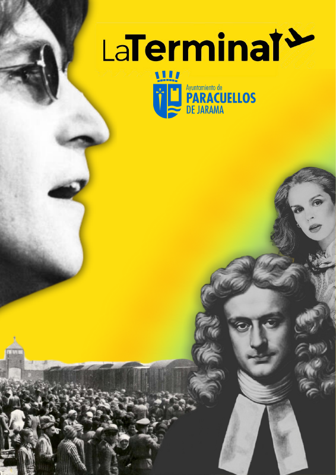
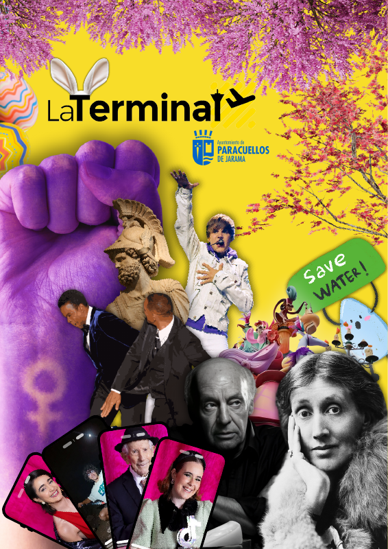
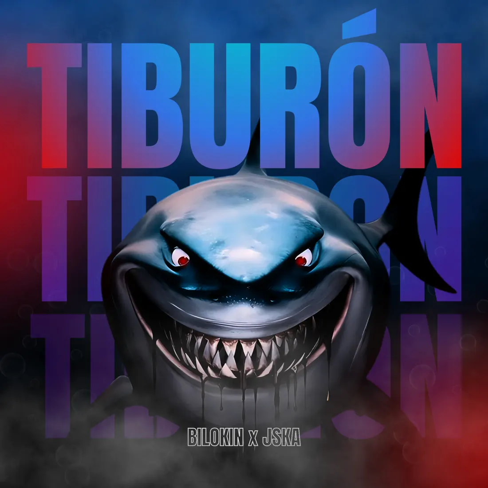
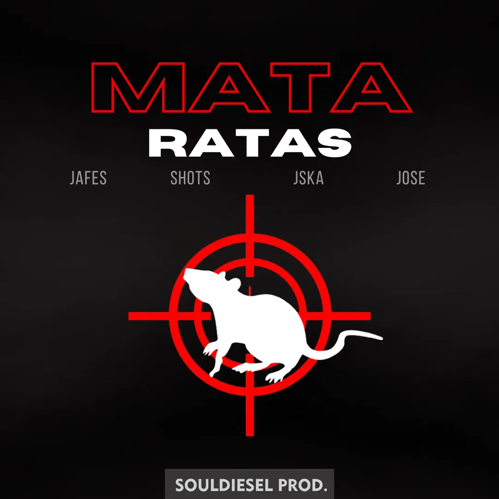

Una revista hecha para detener la mirada. Como director creativo y diseñador, construí un lenguaje visual de collage, contraste y portadas que cambian de tema sin perder identidad.
DIRECCIÓN CREATIVA Y DISEÑO

PORTFOLIO / JULIÁN VARGAS
Hago que una marca se vea, se escuche y trabaje mejor: contenido que capta atención, diseño con personalidad y herramientas que simplifican procesos.
CONTENIDO & VIDEO · IA & AUTOMATIZACIÓN · DISEÑO & AUDIO

01 / LA TERMINALDirección creativa y diseño01 — DISEÑO
La identidad empieza antes del primer clic. Diseño piezas con carácter para que cada proyecto tenga una presencia propia y reconocible.
Una revista hecha para detener la mirada. Como director creativo y diseñador, construí un lenguaje visual de collage, contraste y portadas que cambian de tema sin perder identidad.
DIRECCIÓN CREATIVA Y DISEÑO

La primera escucha empieza por los ojos. Dos universos visuales diseñados para dar personalidad a cada lanzamiento y funcionar tanto en una portada como en movimiento.Tiburón y MATA RATAS. Del arte estático a la pieza audiovisual.
DISEÑO DE PORTADAS Y ANIMACIÓN


02 — ANIMACIÓN
Una portada puede hacer más que acompañar una canción. La animación lleva su identidad a vídeo y crea una nueva pieza para compartirla.
Una imagen de impacto que se transforma en una experiencia audiovisual para el lanzamiento.
Una identidad gráfica directa que continúa su historia en movimiento.
03 — CONTENIDO PARA REDES
En redes, cada segundo cuenta. Grabo y edito piezas que muestran personas, energía y proceso con un formato pensado para verse en el móvil.
Un equipo tiene una historia antes de entrar en pista. La conté con una pieza breve, ritmo de tráiler y formato vertical para transmitir su energía.
GRABACIÓN
El proceso creativo también es contenido. Grabé y edité una mirada al trabajo de un productor musical para acercar su música a quienes la escuchan.
GRABACIÓN Y EDICIÓN
04 — SOLUCIONES DIGITALES E IA
Si una tarea se repite, consume tiempo y admite errores, merece una solución mejor. Convierto necesidades reales en herramientas digitales y flujos de trabajo más claros.
UN CASO REAL / GENERADOR DE SPLIT SHEETS
Un estudio musical necesitaba preparar acuerdos de colaboración de forma local. Diseñé una herramienta que guía la recogida de datos, comprueba porcentajes y genera un documento descargable e imprimible desde el navegador. Menos pasos manuales para un proceso que debe quedar claro.
¿Hay una tarea que te quita tiempo cada semana? Cuéntame cómo trabajas y veamos qué solución tendría sentido para tu equipo.
05 — SOULDIESEL
También llevo una idea musical desde el primer beat hasta la versión final. Producción, grabación, mezcla y máster en un mismo proceso creativo.
Producción · grabación · mezcla · máster
Producción · grabación · mezcla · máster
Creativo y diseñador de soluciones. Trabajo entre la imagen, el sonido y la tecnología: desde la edición de un vídeo o el diseño de una publicación hasta una herramienta que facilite el trabajo de un equipo.
Estudié Inteligencia Artificial aplicada al negocio en Founderz con Microsoft. Como productor musical trabajo bajo el nombre SOULDIESEL, y también soy beatmaker e ingeniero de mezcla.
Busco colaborar con clientes o incorporarme a equipos de contenido, edición e inteligencia artificial.
¿TIENES UN PROYECTO O UNA OPORTUNIDAD?